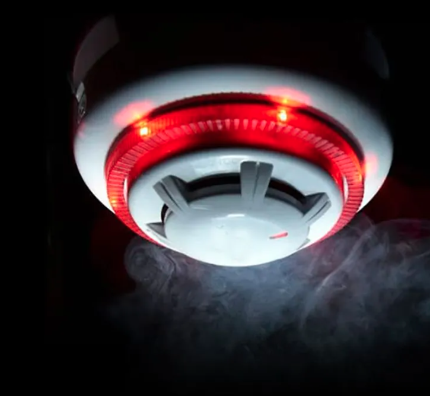

PROFESSIONAL SECURITY
Security Services Built Around You
Reliable guarding, patrol, response and specialist support for organisations, premises and events.
Find Out More →From day-to-day guarding and mobile response to specialist protection and security technology, Eurosys provides practical security services built around the risks, environment and operating needs of each client.
Eurosys delivers professional security personnel and integrated security systems for organisations that require dependable protection and clear operational accountability.
Our experience spans commercial premises, industrial and logistics sites, retail, events, residential environments and specialist assignments. From a single guarding requirement to a coordinated security programme, we build services around the risks, operating environment and priorities of each client.
Our capabilities include manned guarding, mobile patrols, keyholding and alarm response, front-of-house security, event safety, CCTV, access control, alarms, fire safety systems, monitoring and specialist security support.
Eurosys designs security systems around the way a property is actually used. We can combine video surveillance, access control, intruder detection and physical security measures into a practical solution for homes, offices, retail premises, warehouses and other operational environments.
Our approach covers initial assessment, system design, installation and ongoing support. The objective is not simply to install equipment, but to provide useful visibility, controlled access and reliable detection where it matters.
Explore Security Systems →
Secure entry management for staff, visitors and restricted areas.

Early warning solutions for unauthorised entry and security incidents.

Planned maintenance and monitoring support to keep systems dependable.

Perimeter protection measures that strengthen the first layer of site security.

CCTV design and surveillance solutions that improve visibility and incident review.

Fire detection and alarm solutions designed to support early warning, site safety and a coordinated approach to premises protection.
From a single event or alarm response requirement to ongoing guarding and integrated security systems, our team can discuss an appropriate solution.
Our security teams are equipped with modern technology that enables them to work more efficiently while helping protect people, properties, and valuable assets.
By combining skilled security professionals with real-time technology and information, we can detect potential risks sooner, respond more effectively, and maintain a secure environment across every site.
Committed to professional standards, responsible working practices and continual improvement.